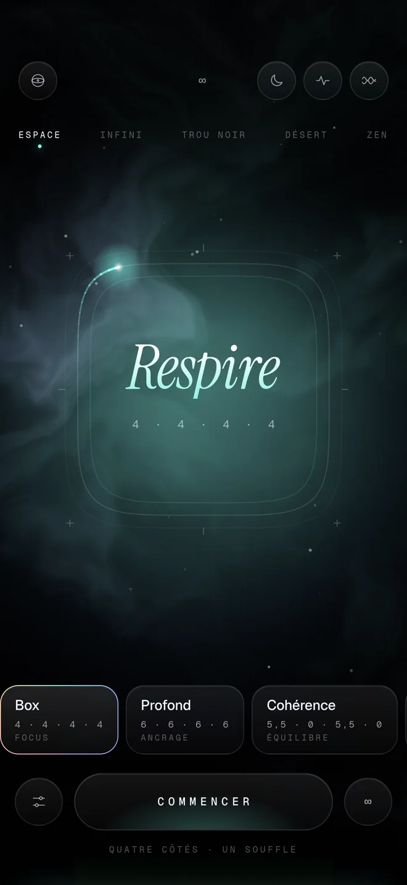
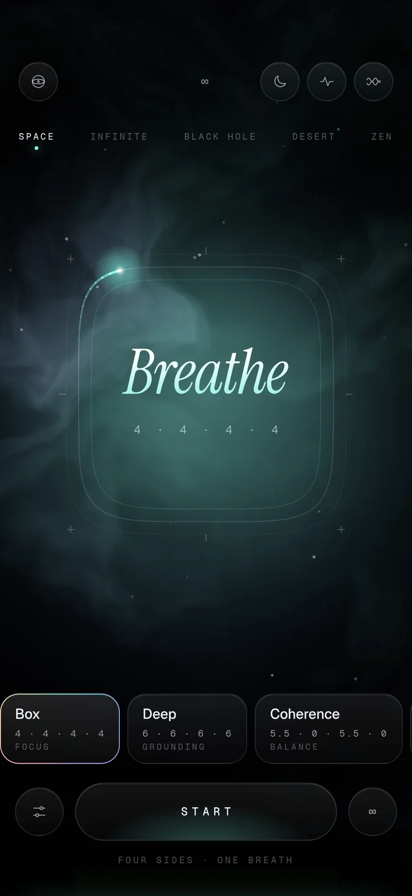

01
Respirer en carréBreathe in a square
Une comète fait le tour du carré, un côté par phase : inspire, retiens, expire, suspends. Le décor et la musique respirent avec toi.A comet travels round the square, one side per phase: inhale, hold, exhale, rest. The scenery and the music breathe with you.
- Box, Profond, Cohérence, 4·7·8, Éveil, ou ton propre rythmeBox, Deep, Coherence, 4·7·8, Wake, or your own rhythm
- Séances de 2 à 20 minutes, ou sans finSessions from 2 to 20 minutes, or endless
- Carillons et vibrations à chaque phaseChimes and haptics at each phase